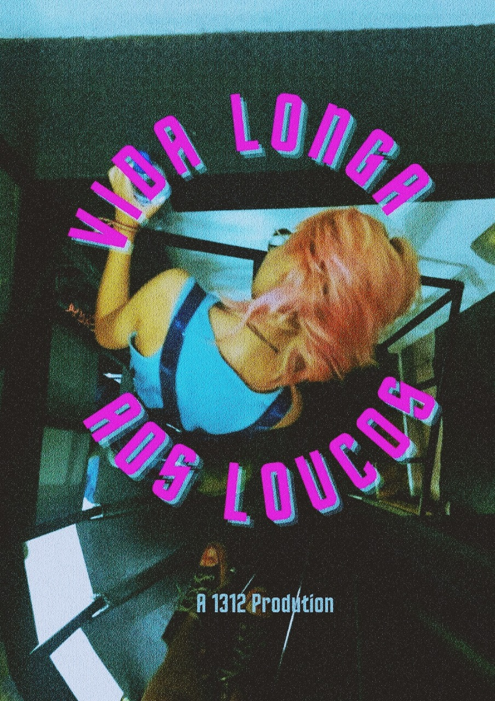

Vida longa aos loucos
comédia
2003, directed by MaiMai
Olá! eu sou a Marina Queiroz, nasci no dia 11/07/2003 na cidade de Campinas/SP onde eu e meus amigos conhecemos mais por bananil. Sou uma pessoa trans não-binário,
meu nome social é Mai ou Maio porque são considerados nomes neutros.
Entrei na escola Jovem, arrumava muuuuitos problemas lá, arremessava mesas na cabeça dos meus colegas. Me mudei de escola e fui pro Sesi, foi uma experiência muito legal,
consegui fazer amizades por lá, que inclusive mantenho contato até nos dias de hoje.
Eu gosto muito de artes, faço ótimos desenhos (pelo menos meus amigos elogiam) e sou uma pessoa extremamente criativa. Desenhar e pintar sempre estiveram presentes desde os 12 anos e eu me identifico muito com isso. Sinto que na arte consigo expressar o que estou sentindo, em todos os meus desenhos eu coloco minha emoção no processo, ouvir musica me ajuda bastante, principalmente quando é brasileira. Fui muito julgada no início pelo meu estilo de desenhar, a sociedade está acostumada com o realismo, mas sempre senti que desenhar realismo não me representava, então fui em busca do meu próprio traço e estou bem satisfeita com meu trabalho.
Amo a misticidade, gosto muito de tarot e olho todos os dias horóscopo e tarot, acho muito interessante como tem conexão com a espiritualidade e se você não tiver interesse/se esforçar pra achar sentido as coisas não funcionam, pois é tipo meio que lei da atração tudo no mundo da espiritualidade. Eu acendo incenso com frequência dependendo do que eu preciso tem um incenso específico para cada coisa, as vezes passo sal na janela e uso um colar de turmalina, tenho de várias pedras mas eu costumo usar mais um q expele carga negativa.
Gosto de sair, e quando saio sempre estou totalmente estilosa e alto astral, meus amigos são bem legais, e o melhor de tudo é que cada um tem seu próprio jeitinho único, acho nosso grupo super descolados e com certeza nos destacamos em qualquer lugar, aliás, qualquer lugar com eles é sempre muito divertido vão ficar pra sempre no meu coração e mente! Não posso esquecer da minha família também, amo cada um deles, principalmente os meus pais, eu daria a minha vida pelos dois. Te amo mãe! te amo pai!
Eu gosto muito de artes, faço ótimos desenhos (pelo menos meus amigos elogiam) e sou uma pessoa extremamente criativa. Desenhar e pintar sempre estiveram presentes desde os 12 anos e eu me identifico muito com isso. Sinto que na arte consigo expressar o que estou sentindo, em todos os meus desenhos eu coloco minha emoção no processo, ouvir musica me ajuda bastante, principalmente quando é brasileira. Fui muito julgada no início pelo meu estilo de desenhar, a sociedade está acostumada com o realismo, mas sempre senti que desenhar realismo não me representava, então fui em busca do meu próprio traço e estou bem satisfeita com meu trabalho.
Amo a misticidade, gosto muito de tarot e olho todos os dias horóscopo e tarot, acho muito interessante como tem conexão com a espiritualidade e se você não tiver interesse/se esforçar pra achar sentido as coisas não funcionam, pois é tipo meio que lei da atração tudo no mundo da espiritualidade. Eu acendo incenso com frequência dependendo do que eu preciso tem um incenso específico para cada coisa, as vezes passo sal na janela e uso um colar de turmalina, tenho de várias pedras mas eu costumo usar mais um q expele carga negativa.
Gosto de sair, e quando saio sempre estou totalmente estilosa e alto astral, meus amigos são bem legais, e o melhor de tudo é que cada um tem seu próprio jeitinho único, acho nosso grupo super descolados e com certeza nos destacamos em qualquer lugar, aliás, qualquer lugar com eles é sempre muito divertido vão ficar pra sempre no meu coração e mente! Não posso esquecer da minha família também, amo cada um deles, principalmente os meus pais, eu daria a minha vida pelos dois. Te amo mãe! te amo pai!